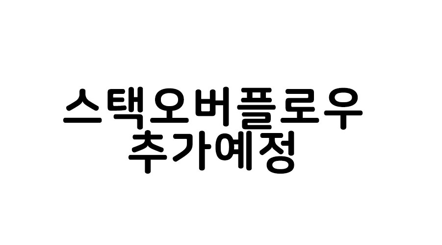
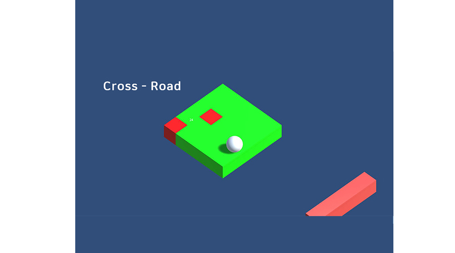
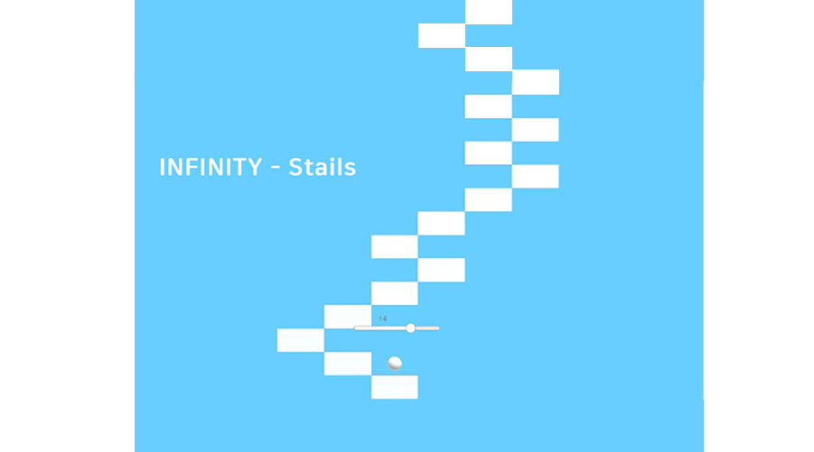
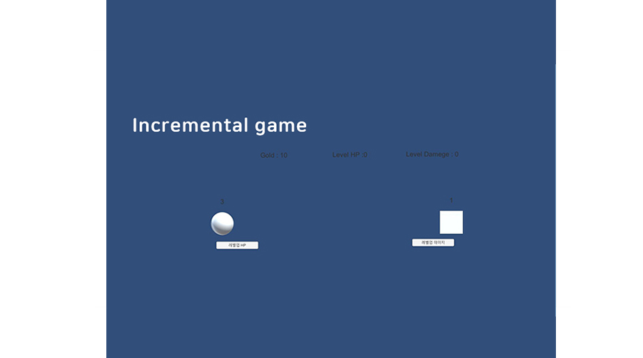
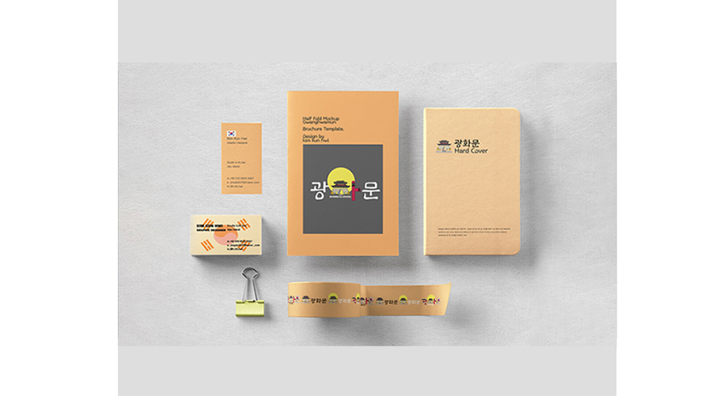
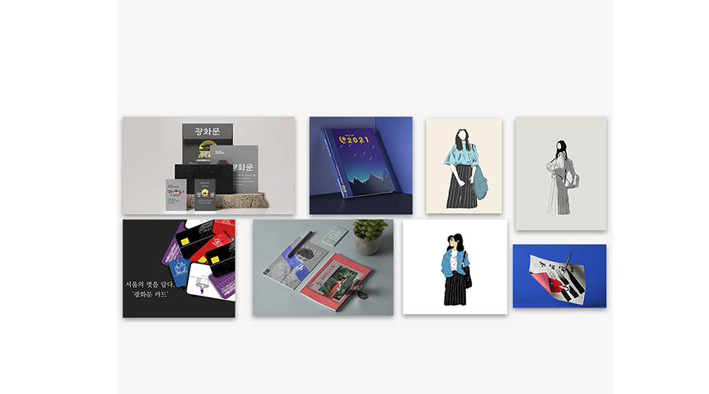

안녕하세요. 끊임없는 배움과 성장을 추구하는 열정있는 주니어 개발자 김건휘입니다.
개발기술에 대한 관심이 많고 재미있는 소규모 프로젝트 위주의 개발을 좋아합니다.
궁금하신 점이 있으시다면 언제든지 편하게 연락주세요 !
개발기술에 대한 관심이 많고 재미있는 소규모 프로젝트 위주의 개발을 좋아합니다.
궁금하신 점이 있으시다면 언제든지 편하게 연락주세요 !
-
15st March, 1997
-
+82 10-8520-9367
-
overrainbow0315@gmail.com
-
TECH STACKJAVA자바는 썬 마이크로시스템즈의 제임스 고슬링(James Gosling)과 다른 연구원들이 개발한 객체 지향적 프로그래밍 언어입니다. 현재 웹 애플리케이션 개발에 가장 많이 사용하는 언어 가운데 하나이고, 모바일 기기용 소프트웨어 개발에도 널리 사용하고 있습니다. 현재 버전 17SE 버전까지 출시되었습니다. 저는 이러한 자바를 이용하여 웹 서버 개발을 하고 있습니다.SPRING스프링 프레임워크는 자바 플랫폼을 위한 오픈 소스 애플리케이션 프레임워크로서 간단히 스프링이라고도 합니다. 동적인 웹 사이트를 개발하기 위한 여러 가지 서비스를 제공하고 있습니다. 저는 이러한 스프링을 통하여 웹 사이트 백엔드 구축을 하고있습니다.DATABASE데이터베이스란 여러 사람이 공유하고 사용할 목적으로 통합 관리되는 정보의 집합입니다. 논리적으로 연관된 하나 이상의 자료의 모음으로 그 내용을 고도로 구조화함으로써 검색과 갱신의 효율화를 꾀한 것입니다. 즉, 몇 개의 자료 파일을 조직적으로 통합하여 자료 항목의 중복을 없애고 자료를 구조화하여 기억시켜 놓은 자료의 집합체라고 할 수 있습니다. 이러한 데이터베이스에는 다양한 솔루션들이 존재하는데 저는 그 중에서도 MySql,h2를 사용합니다. 저는 이러한 솔루션을 이용하여 웹 시스템의 데이터베이스를 구축하는 일을 하고 있습니다.C#C#은 마이크로소프트에서 개발한 객체 지향 프로그래밍 언어로, 닷넷 프레임워크의 한 부분으로 만들어졌으며 나중에 ECMA 와 ISO 의 표준으로 자리잡은 언어입니다. 저는 C#을 통하여 취미로 게임을 개발하고 있습니다.UNITY유니티는 3D 및 2D 비디오 게임의 개발 환경을 제공하는 게임 엔진이자, 3D 애니메이션과 건축 시각화, 가상현실 등 인터랙티브 콘텐츠 제작을 위한 통합 제작 도구입니다.
저는 게임개발로 C#베이스의 게임개발 툴로 사용하고 있습니다.PORTFOLIO- ALL
- SPRING
- UNITY
- DB
- OHTERS
 TodoList제가 처음으로 협업을 한 프로젝트이며 스프링으로 개발을 해본 첫 웹서비스 입니다. 저는 이 프로젝트에서 전반적인 백엔드 개발을 담당하였으며
TodoList제가 처음으로 협업을 한 프로젝트이며 스프링으로 개발을 해본 첫 웹서비스 입니다. 저는 이 프로젝트에서 전반적인 백엔드 개발을 담당하였으며
사용 기술로 자바 스프링을 사용하였고 DB로 H2 DB를 사용하였으며, 배포툴로 AWS를 사용하였습니다.
백엔드 개발자로서의 첫프로젝트 이니 만큼 매우 오류도 많았고 우여곡절도 많이 겪었지만
문제를 해결하는 과정에서 개발의 재미를 한층 더 느끼게 만들어주었고 백엔드 개발자로의서 흥미 및 진로에 대한 방향성을 제시해준 프로젝트입니다.Pre-project 후 추가예정추가예정상세설명길건너 친구들 클론코딩게임개발에 관심을 가지고 만든 첫 게임입니다. 평소에 게임개발에 관심이 있던 저에게 처음으로
게임을 만든 계기가 되어준 아주 뜻깊은 게임이었습니다. 이 프로젝트를 진행하면서 개발에 대한 즐거움은 더 느끼게 되었습니다.
또한 다양한 게임룰을 구성하고 메서드를 만드는 과정에서 전반적인 개발 이해도가 상승하였습니다.무한의 계단 클론코딩한창 스마트폰이 막 나오던 시절, 무한의 계단을 참 재미있게 하였습니다. 어느날 지식을 쌓기 위해 인프런을 보던 중
제주 코딩베이스 캠프에서 유니티 및 C#에 대한 클론코딩 강의를 내주어 수강을 하면서 만든 게임입니다.
클론코딩을 함에도 오류가나거나 동작을 하지 않는 둥 많은 시행착오를 겪었지만 그 과정 속에서 게임개발에 대한 열정과
이해를 한층 더 깊게 만들어준 프로젝트 였습니다.방치형 RPG 클론코딩제가 C#과 유니티를 접한 후 만든 세번째 게임입니다 . 이 과제가 제가 수강하던 강의에 마지막 강의였는데
마지막이니 만큼 난이도가 상당했으며 정말 수많은 오류들을 겪었습니다. 하지만 오류를 해결하고 헤쳐나가면서
개발에 관한 질문들을 질문하는 법과 서치하는 법도 더불어 늘었기 때문에 아주 재미있게 수행한 프로젝트 였습니다.프로젝트: 광화문디자인저는 개발에 입문하기전 편집디자이너로 근무하였으며, 그중에 광화문 프로젝트는 제가 아주 열심히 구상하였고
다양한 관점에서 만들기 위해 노력한 프로젝트였기 포트폴리오에 할당하게 되었습니다.
광화문 프로젝트에 대한 더 많은 작업물들이 있지만 이 포트폴리오는 개발 포트폴리오 이기 때문에 삼가하였습니다.Art취미저는 그림을 그리고 무언가를 디자인 하는 것을 참 좋아합니다. 이러한 작업물들을 통하여 나를 표현하는 방법을
더 발전시킬 수 있었고 저의 시각을 넓히며 한층 더 깊게 고민하며 문제를 해결 할 수 있는 기초적인 능력을 이 취미를 통하여 얻었다 생각합니다.